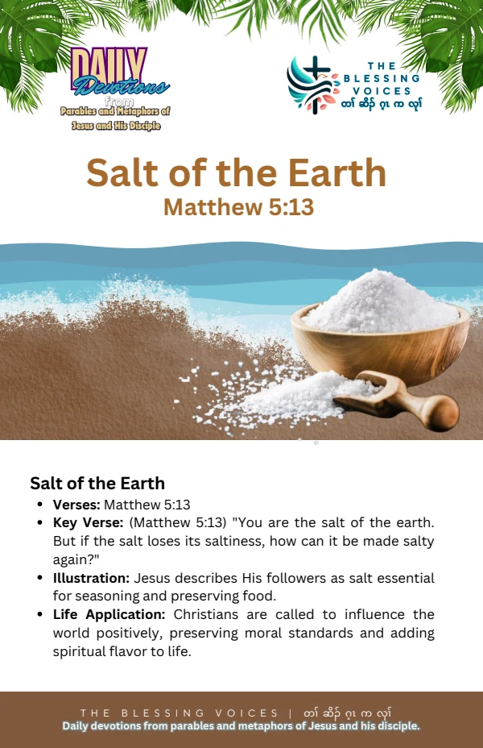

Introduction
Read this English paraphrase of the biblical teaching alongside the original companion booklet. Context notes, devotional applications, reflection questions, and prayer are study aids rather than additional biblical text.
The Bible Story
Jesus described his disciples as the salt of the earth. He asked how salt could be made salty again if it lost its taste, and spoke of tasteless salt being thrown out and trampled. This is a paraphrase of Matthew 5:13.
Historical and Biblical Context
CONTEXT & DEVOTIONAL INTERPRETATIONThis metaphor appears in the Sermon on the Mount, immediately before the images of light, a city, and a lamp. It is a teaching illustration, not an account of a named person losing a supply of salt.
Spiritual Lessons
CONTEXT & DEVOTIONAL INTERPRETATIONThe image invites reflection on faithful distinctiveness and a life that contributes to the good of others. These applications interpret the metaphor rather than add events to it.
Practical Life Applications
CONTEXT & DEVOTIONAL INTERPRETATIONChoose one way to act with integrity or kindness where you live or work. Consider whether your habits reflect what you profess to believe.
Reflection Questions
- What does Jesus call his disciples?
- What does his warning about salt invite you to examine?
- How can your conduct contribute to the good of others this week?
Closing Prayer
Lord God, help us understand your Word and receive it with humility. Guide our choices and teach us to live with faith, wisdom, and love. Amen.
Continue your reflection.
Your free companion study booklet.
Download Free Booklet ↓PDF · Free download